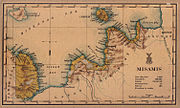

History of Misamis Oriental
Lanao Sultanate era
In the 16th century, the people of the territory were obliged to pay tribute to Maranao Muslim rulers as the regional powerhouses converted to the Muslim faith. Lumads on the coast started converting into Islam or were displaced by other ethnic groups that converted earlier. Those in the interior retained their native faiths.
Spanish colonial era
Misamis Oriental shared a history with Misamis Occidental of being part of the Province of Cebu during the Spanish colonial era. In 1818, Misamis was carved out from Cebu to become a separate province with Cagayan de Misamis (Cagayan de Oro) as its capital and was further subdivided into partidos or divisions: Partido de Cagayan (Division of Cagayan), Partido de Catarman (Division of Catarman), Partido de Dapitan (Division of Dapitan), and Partido de Misamis (Division of Misamis). The new Misamis province was part of the districts of Mindanao during the later part of the 19th Century, with its territory spanning from Dapitan to the west, Gingoog to the East, and as far as Lanao and Cotabato to the south.
Misamis is one of the Spanish-controlled territories vulnerable to Moro raids. The Fuerza de la Concepcion y del Triunfo in Ozamiz was built as a Spanish military installation and one of the staging points in their expeditions against Moros. A fort in Balo-i in present-day Lanao del Norte was also constructed in 1891 on the orders of General Valeriano Weyler in its renewed campaign against the Maranaos. The Fuerza de San Miguel in Iligan was also built, serving as a muster point for Spanish forces in their campaigns in Lanao.
American invasion era
Misamis province
